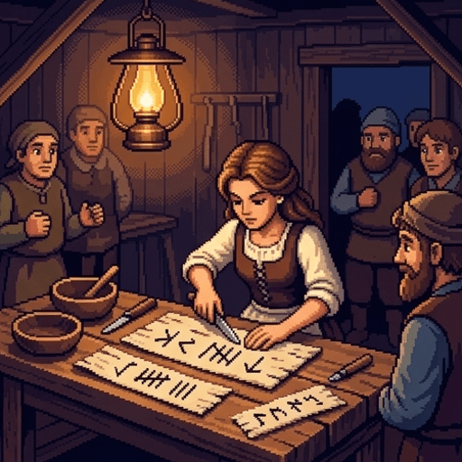
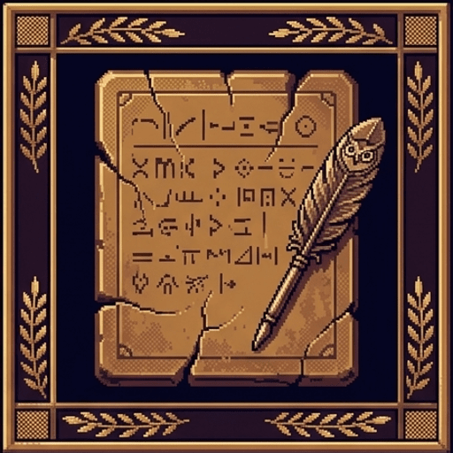
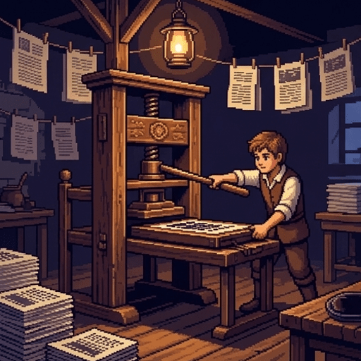
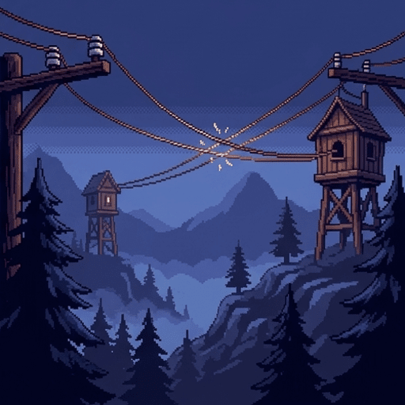
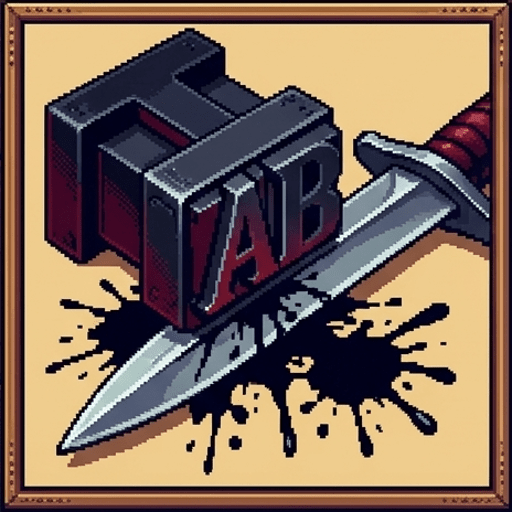
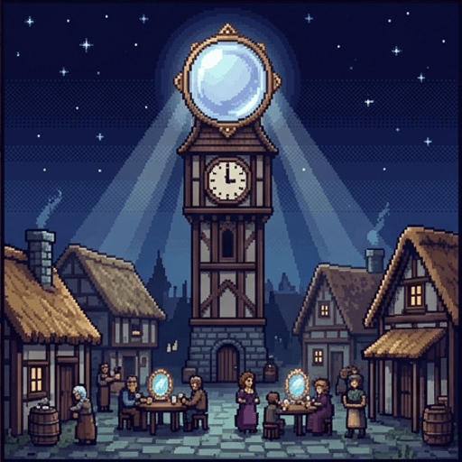
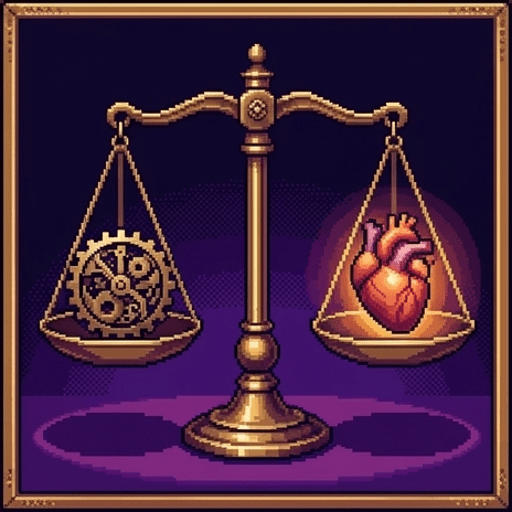

Hansel once dropped white pebbles, then breadcrumbs. Breadcrumbs get eaten by birds. So Gretel carved a mark into a beech tree. That was the first mistake.
Use → (or Next) to advance and reveal points one at a time. F = fullscreen.
The Fragile Forest
Welcome to Oakhaven, population 410. You and your sister are the village's official Problem Solvers. Every morning, oral culture threatens to unravel the peace:
Master Aldous, the village elder, has forgotten the second half of the annual Frost-Ward Spell.
The miller and the baker have been shouting at the town well since sunrise over whether eight sacks of barley were borrowed or ten.
When wolves approach the ridge, the only warning is the woodcutter sprinting through thorns until his lungs give out.
Oral tradition is warm, communal, and human. It is also completely at the mercy of forgetful brains.
Dawn: Where You Stand
Before the inventing begins — six gut-checks, no right answers. You will meet each one again at sundown after 2,500 years of unintended consequences.
A tool is neutral; good or evil comes only from the hand that holds it.Writing down an agreement makes it inherently more just than a spoken handshake.Making information cheaper and faster always makes a society more democratic.Instant communication between rival groups makes misunderstanding and war less likely.If you give everyone a public platform, truth will naturally defeat falsehood.Whenever a culture adopts a new medium, it loses an intellectual ability it used to practice.

The First Trail: Bark Runes
Gretel takes a hunting knife and begins notching standardized symbols into strips of white birch bark. Within a week, the village is transformed:
The barley debt is notched: exactly eight sacks. The miller and baker shake hands.
The Frost-Ward spell is permanently preserved in oak-gall ink.
Paths through the deep woods are blazed on tree trunks so no child will ever be lost again.
The village rejoices: knowledge has been freed from the frail container of the human skull!
The Unforeseen Goblins
By autumn, Oakhaven discovers that fixing words to bark is not merely a convenience. It is a quiet social revolution:
The Atrophy: The schoolmaster notices children can no longer recite three verses of poetry without clutching their bark slips.
The Stray Word: Red Riding Hood receives a written note: "Grandmother is sick; bring cakes to the dark thicket." It was carved by the Wolf. An oral voice has a face and an accent; a written note wanders without its speaker.
The Scribe's Gate: The village magistrate rules that oral promises are no longer legally binding. The illiterate woodcutters are suddenly defenseless in court.

c. 370 BCE
The King Who Said No: Plato
In the Phaedrus, Socrates recounts the Egyptian god Theuth presenting writing to King Thamus as an elixir of memory and wisdom.
King Thamus replied with a devastating verdict:
"This invention will produce forgetfulness in the minds of those who learn to use it, because they will not practice their memory. You have provided an elixir not of memory, but of reminder. You offer the appearance of wisdom, not true wisdom."
Living Memory vs. The Silent Text
Plato warned that transitioning from oral dialogue to written text changes the very nature of truth:
Dynamic, communal, and rooted in living memory. It can answer questions, explain itself when misunderstood, and adapt to the listener.
Grandmother teaching you how to bake bread by smell and touch, correcting your technique as you go.
Fixed, standardized, and detached from the author. It repeats the exact same sentence forever and cannot defend itself against bad-faith readers.
A printed recipe card followed rigidly by a novice even after the milk has turned sour.
Name That Shift № 1
Writing was too expensive, ensuring only wealthy nobles could participate in civic lifeIt externalizes memory, giving people the illusion of wisdom without the discipline of understandingStandardized written laws made criminal trials too rigid for judges to show mercy
The Herbal Bottleneck
Winter arrives, bringing the dreaded Purple Fever. The tragedy strikes not from lack of medicine, but from lack of bandwidth:
The sole recipe for the Wolf-Bane antidote is locked in the Duke's abbey, written in Latin in a single leather-bound codex.
Brother Thomas, the scribe, takes three weeks of meticulous labor to illuminate a single duplicate page.
Two families perish while waiting for their turn with the manuscript.
Hansel inspects the cider press behind the barn and mutters: "There must be a way to strike ten thousand pages at once."

Hansel's Crank Press
Hansel carves movable lead characters, mixes soot with walnut oil, and adapts the village screw-press:
In a single afternoon, the press produces 500 identical copies of the Wolf-Bane remedy.
Every hearth in Oakhaven has the life-saving recipe nailed to its doorpost by nightfall.
The Purple Fever is eradicated in forty-eight hours.
Hansel is crowned the greatest benefactor in the valley's history. Knowledge is now free, cheap, and universal.
The Paper Deluge
The press did not stop at herbal remedies. Within two months, anyone with a sack of lead letters and cheap paper was an author:
The Witch and the Pied Piper rented night-shifts on the press.
Sensational broadsides were nailed to the church door: "IS THE DUKE ACTUALLY THREE GOBLINS IN A CLOAK?" and "WHY THE MILLER'S FLOUR CONTAINS TOAD DUST."
Villagers stopped conversing at the well; they waved competing printed tracts in each other's faces.
A brawl over a forged tract burned down the bakery. When the Duke ordered the press smashed, the villagers rioted to defend it.
The Dream of Erasmus vs. The Reality of Luther
The 16th-century printing revolution split Europe into the exact same two camps that divided Oakhaven:
Believed cheap printing would spread calm scholarship, universal Bible literacy, and peaceful moral consensus across Christendom.
A scholar in every cottage quietly reading the classics and growing wiser in solitude.
Realized the press was not a quiet library but a weapon. Unleashed short, fiery vernacular pamphlets that shattered church authority and sparked 130 years of religious wars.
Viral leaflets nailed to church doors that mobilized furious crowds before bishops could reply.
The Mechanics of Disintermediation
Fill in the clerk's report on how the press reorganized Oakhaven's authority:
The printing press caused chaos not by making people wicked, but by destroying the village's
gatekeepers.
When the cost of copying drops to near zero, the volume of words outpaces the public's capacity for
discernment.
Erasmus dreamed of universal enlightenment,
but Luther proved that cheap ink accelerates polarization.
Name That Shift № 2
Authority moved from institutional gatekeepers who vetted truth to pamphleteers who mobilized crowds fastestVillagers lost the ability to read and returned entirely to oral folklore and superstitionPhysical records degraded so quickly that centuries of legal precedent were permanently lost
The Ridge in the Mist
Spring brought a new threat: mountain trolls gathering along the jagged border with the neighboring Valley of Elden.
Sending a rider on horseback from the mountain watchtower to the village garrison takes thirty-six hours.
By the time the riders arrived, the outer homesteads had already been raided.
The Burgomaster pounded the table: "In an age of crisis, waiting thirty-six hours for news is suicide. We must speak at the speed of lightning."

The Singing Wires
Gretel strings zinc-copper wires on ceramic insulators across the pine canopy, connecting every watchtower to the garrison:
A tapped pulse at the ridge rings the bell in Oakhaven three seconds later.
An attempted border ambush is intercepted in under twenty minutes.
The Victorian prophecy echoes through the valley: "When the electric wire binds all nations together, misunderstandings will become impossible and eternal peace will reign!"
The 10-Minute War
Speed solved the border delay. It also destroyed the one thing diplomacy required: time to think.
The False Signal: At 2:00 AM, a terrified sentry taps an anxious fragment: "SHADOWS AT FORD STOP HEAVY WEAPONS STOP." (It was charcoal burners with poles).
The Vanishing Latency: The Burgomaster has no time to send an envoy to verify. Speed creates urgency: if he waits, Elden might strike first.
He wires an enraged ultimatum to Elden's Duke. Elden's sleepy Duke, terrified by the sudden telegram, orders a preemptive cavalry charge.
By dawn, forty soldiers are dead over an unverified four-word telegram.

1964 / 1985
The Medium is the Message
Marshall McLuhan and Neil Postman diagnosed the electric trap that caught Oakhaven:
McLuhan (1964):"The medium is the message." The scale and speed of a technology remodel human relations far more than the specific sentences sent over it.
Postman (1985): The Information-to-Action Ratio. The telegraph flooded humanity with decontextualized, urgent fragments that demand immediate reaction without enabling deep comprehension.
A 2-day horse ride was not a defect; it was a diplomatic cooling-off period.
Name That Shift № 3
Frequent electrical short-circuits caused the warning bells to ring continuously by mistakeThe telegraph could only send numbers, preventing ambassadors from explaining diplomatic nuanceIt eliminated the cooling-off buffer of physical travel, forcing leaders to act instantly on fragmented rumors

The Mirror Tower
To unite the bickering valley, Gretel builds the ultimate medium: an enchanted Crystal Reflector atop the clocktower, beaming a single broadcast to glass shards on every kitchen table.
At first: morning farm forecasts, lovely harp music, and official announcements.
Then the Pied Piper realizes the law of the glass: calm farming advice gets two viewers; shouting about conspiracies gets three hundred.
The Mirror begins automatically tilting toward whatever makes human hearts beat fastest.
Within six months, villagers rarely look at each other; they sit by the hearth arguing with glowing glass about crises three forests away.

1986
Kranzberg's Laws of Technology
Historian Melvin Kranzberg formulated the six laws that govern Oakhaven's entire history:
First Law:"Technology is neither good nor bad; nor is it neutral." A tool is not an inert puppet; its architecture actively biases what humans do and value.
Second Law:"Invention is a mother of necessity." Every technological fix creates secondary social dilemmas that require yet another technical fix.
Runes required courts; presses required copyright and censors; wires required military codes; mirrors required content moderators.
The Information Cascade Engine
Select any technological property below to inspect how Oakhaven's "innocent fix" triggered a secondary moral crisis:
The Stated Goal
Stop forgetting debts & paths. Carve words onto permanent birch bark so agreements never decay.
The Cognitive Cost
Memory atrophy. Villagers stop practicing oral recall; the spoken word is stripped of legal standing.
The Unforeseen Crisis
The detached text. Forged notes from wolves wander without their speakers to verify their intent.
Notice the recurring rule: each tool was built to stop someone from being eaten, and ended up restructuring what the village valued.
The Laws of Information Shocks
Every new medium rewards certain cognitive habits while allowing older abilities to atrophy.Lowering the cost of reproducing information destabilizes traditional authorities before public verification mechanisms can adapt.Increasing the speed of communication between rival nations has historically eliminated misunderstandings and ensured peace.Technologies are not morally neutral; their structural architecture actively biases human behavior and institutional power.Inventors of transformative media throughout history have reliably predicted how their tools would be used fifty years later.
The Scriptorium Door
The sun is sinking behind the clocktower. Brother Thomas, the former abbey scribe, sits on the stone steps cleaning his dried quill.
Listen to Brother ThomasReturn to the tavern porch
What Brother Thomas Knew
Brother Thomas holds up a single parchment of the ancient Vulgate:
"You young people thought my manuscripts were slow because I was lazy. My manuscripts were slow because truth is heavy. When you made words as light as thistledown, you made them as easy to scatter and as easy to burn."
The friction of copying was a quality filter. It was an imperfect, undemocratic filter—but it was a filter.
When friction disappears, the cost of producing truth remains high, while the cost of producing toxic noise drops to zero.
It Was All One Trail
Step back from Oakhaven. Every crisis Hansel and Gretel caused was a genuine chapter of human history:
Writing (370 BCE) — Traded internal memory for permanence → Plato's warning about detached text.
Print (1450s) — Traded scribe gatekeepers for mass volume → Erasmus's dream vs. Luther's pamphlet wars.
Telegraph (1840s) — Traded diplomatic latency for instant speed → The July 1914 crisis and McLuhan's electric nervous system.
Web & AI (Present) — Trades human synthesis for infinite generation → The synthetic information flood.
The Road to Amberville
Oakhaven's story didn't end in the Black Forest. It moved west to Amberville:
When Amberville installed PRUDENCE in Week 1, it repeated this exact cycle:
The curated notice board was the Pamphlet War reborn.
Glimmer ledger-money was the Bark Rune taken to its logical extreme.
The sheriff's Thursday crime list was the Singing Wire operating on predictive statistics.
There are no completely new ethical dilemmas in computing—only ancient human vulnerabilities wearing newer, faster gears.
Sundown in the Forest
Here is where you stood at dawn. Re-rate each statement — and observe how four technological epochs have challenged the assumption that tools are ever "just tools."
Visit every slide, answer all three checks correctly, and submit your ratings to complete the lesson.
The Trail Ahead
"We thought we were inventing tools to talk across the woods," Gretel wrote in the village chronicle. "We were actually deciding what kind of human beings would live on the other side."
Lesson complete! You have charted the four great information shocks.
Next week: Week 3 — Technology and Virtues (how our daily devices forge or erode human character).